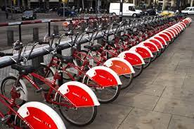

Domestic flights
The domestic flight traffic in Denmark is relatively small compared with other countries, but there are several daily flights from Copenhagen to cities around Denmark. SAS has direct flights to Aarhus, Aalborg, and Billund. Norwegian has direct flights to Aalborg, Billund, and Karup
MORE INFO
Train
In Denmark, the national rail operator DSB operates between Copenhagen and towns across Denmark and southern Sweden. Train from the capital of Copenhagen to Aarhus will take three hours, to Aalborg four hours and Odense two and a half hour. You can buy a ticket at every train station ticket office or use the ticket automats on the platforms with English languages. Small shops like seven eleven also provide tickets. If you want to buy online tickets, please see our related info.
MORE INFO
Coach
You can also travel by coach around Denmark. Several different companies are operating, but not all of them have English-languages websites, so it’s a good idea to contact the tourist office of the destination you have in mind, to ask for their guidance on routes and tickets. There is one big international operator, Flixbus, which has good and cheap connections across Denmark.
MORE INFO
Ferry
In Denmark, you will find a lot of islands and ferry routes. There are thousands of ferry routes, and the easiest way is to ask the local tourist office and visit our ferry list for more details.
MORE INFO

Biking
Denmark is very easy to explore on a bike with over 10,000 km of biking routes. Many of the cities in the country have bicycle rentals for interested visitors and locals. Many Danes use their bicycle to and from work, and in Copenhagen, it is more than 40 per cent. The bike lanes are extensive and impressive - therefore Denmark is one of the countries in the world where you can see most bicycles.
MORE INFO